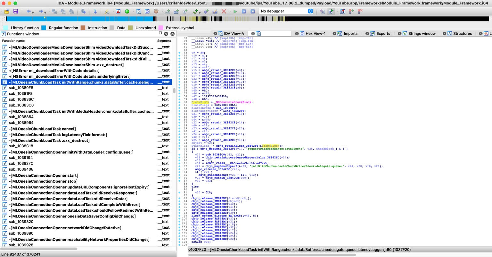
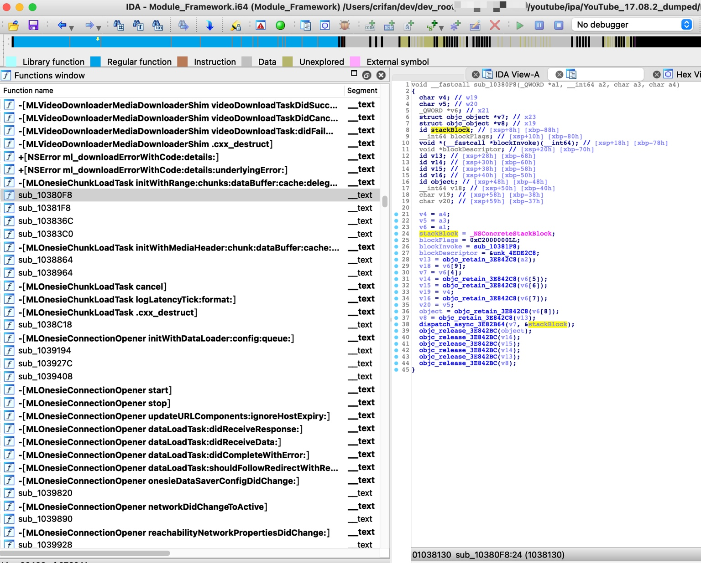
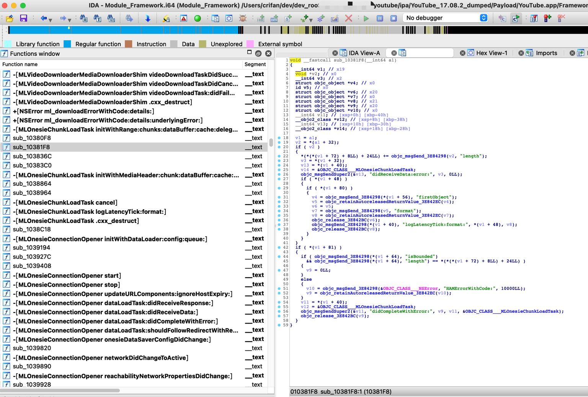
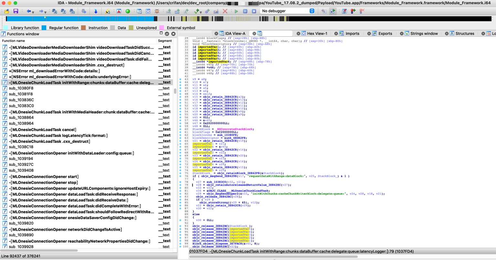
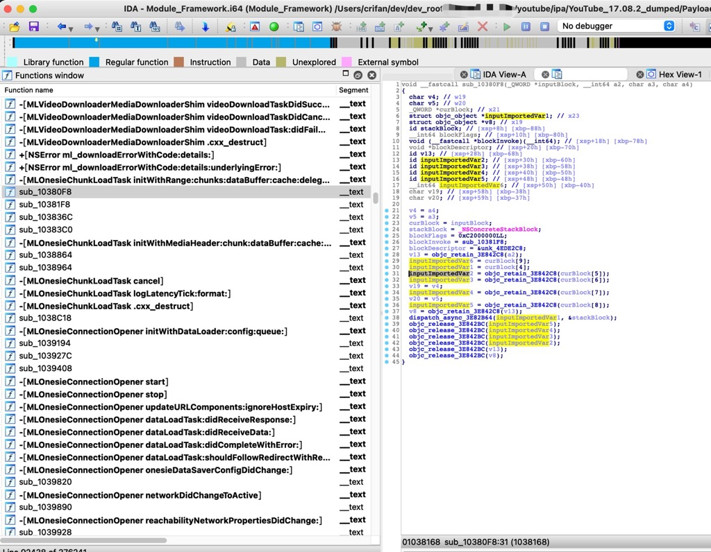
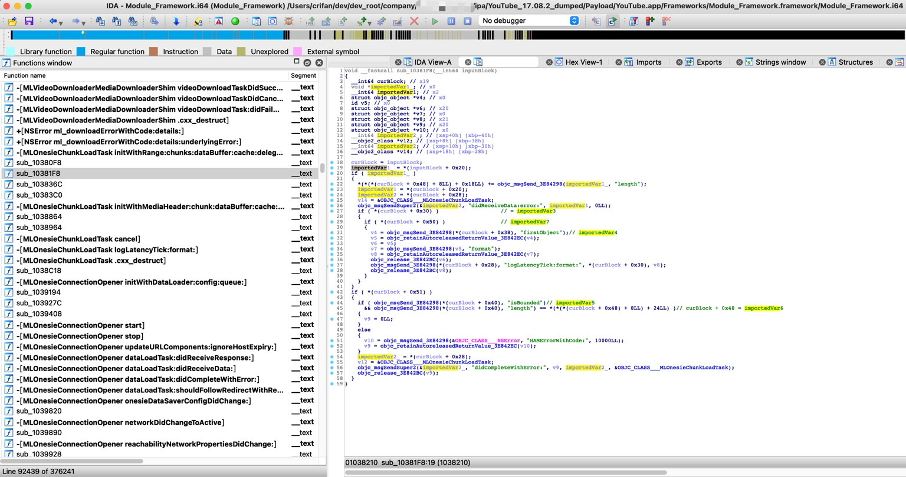
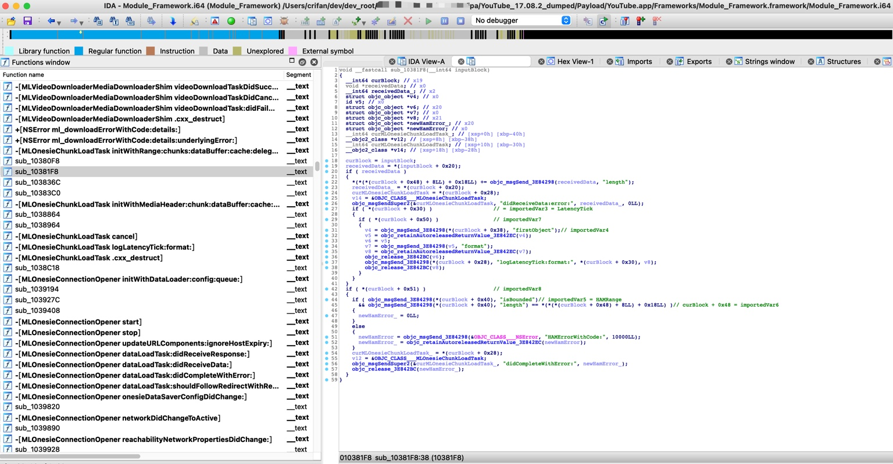

YouTube逆向
此处通过具体实例来说明：
iOS逆向YouTube期间，如何搞懂Block异步函数调用，包括如何传递参数引用变量=imported variables。
YouTube的函数调用逻辑是：
当 去掉广告过滤 时，调用到 MLServerABRLoader onesieDataLoader:didCompleteChunks:withError: 的顺序：
-[MLOnesieChunkLoadTask initWithRange:chunks:dataBuffer:cache:delegate:queue:latencyLogger:]
sub_10380F8 = -[MLOnesieChunkLoadTask initWithRange:chunks:dataBuffer:cache:delegate:queue:latencyLogger:]_block
sub_10381F8 = -[MLOnesieChunkLoadTask initWithRange:chunks:dataBuffer:cache:delegate:queue:latencyLogger:]_block_block + 344 =
-[HAMBaseChunkLoadTask didCompleteWithError:] + 412
-[MLServerABROnesieDataLoader chunks:didCompleteLoadingWithError:] + 92
MLServerABRLoader onesieDataLoader:didCompleteChunks:withError:
参数举例：
[case 1]:
arg1=0x0000000282b42000,
arg2=1 element,
arg3=domain: "com.google.ios.hamplayer" - code: 10000
[case 2]:
arg1=<MLServerABROnesieDataLoader: 0x282bd5e80>,
arg2=<__NSSingleObjectArrayI 0x2807d1510>(
<HAMMP4InitializationChunk: 0x282bc3b80>
)
arg3=NULL
其中的：
sub_10380F8=-[MLOnesieChunkLoadTask initWithRange:chunks:dataBuffer:cache:delegate:queue:latencyLogger:]_block
就是函数：
-[MLOnesieChunkLoadTask initWithRange:chunks:dataBuffer:cache:delegate:queue:latencyLogger:]的Block回调函数- 后续会异步执行
而后续继续调用了其他的Block回调函数：
sub_10381F8=-[MLOnesieChunkLoadTask initWithRange:chunks:dataBuffer:cache:delegate:queue:latencyLogger:]_block_block
下面就从对应的IDA伪代码中，去分析和解释具体逻辑和过程：
Block通过invoke调用子函数
-[MLOnesieChunkLoadTask initWithRange:chunks:dataBuffer:cache:delegate:queue:latencyLogger:]
第一层：-[MLOnesieChunkLoadTask initWithRange:chunks:dataBuffer:cache:delegate:queue:latencyLogger:]
IDA伪代码：
MLOnesieChunkLoadTask *__cdecl -[MLOnesieChunkLoadTask initWithRange:chunks:dataBuffer:cache:delegate:queue:latencyLogger:](MLOnesieChunkLoadTask *self, SEL a2, id a3, id a4, id a5, id a6, id a7, id a8, id a9)
{
...
id StackBlock; // [xsp+20h] [xbp-C0h]
__int64 blockFlags; // [xsp+28h] [xbp-B8h]
__int64 (__fastcall *blockInvoke)(_QWORD *, __int64, char, char); // [xsp+30h] [xbp-B0h]
void *blockDescriptor; // [xsp+38h] [xbp-A8h]
...
StackBlock = _NSConcreteStackBlock;
blockFlags = 0xC2000000LL;
blockInvoke = sub_10380F8;
blockDescriptor = &unk_4EDE2F8;
v21 = objc_retain_3E842C8(v19);
...
StackBlock_ = objc_retainBlock_3E842F8(&StackBlock);
if ( objc_msgSend_3E84298(v17, "requestDataWithRange:dataBlock:", v25, StackBlock_) & 1 )
...
}

而其中的Block中被调用的，后续会异步执行的函数是：
sub_10380F8
就是此处的，iOS逆向期间，调试找出的，函数调用堆栈中的：
-[MLOnesieChunkLoadTask initWithRange:chunks:dataBuffer:cache:delegate:queue:latencyLogger:]_block
对应的真正触发调用子函数的代码是：
objc_msgSend_3E84298(v17, "requestDataWithRange:dataBlock:", v25, StackBlock_)
对应的v17 requestDataWithRange:dataBlock:的内部，会有dispatch_async之类的真正触发调用此处的Block的invoke函数
-[MLOnesieChunkLoadTask initWithRange:chunks:dataBuffer:cache:delegate:queue:latencyLogger:]_block
第二层：-[MLOnesieChunkLoadTask initWithRange:chunks:dataBuffer:cache:delegate:queue:latencyLogger:]_block
IDA伪代码是：
void __fastcall sub_10380F8(_QWORD *a1, __int64 a2, char a3, char a4)
{
...
struct objc_object *v7; // x23
struct objc_object *v8; // x19
id stackBlock; // [xsp+8h] [xbp-88h]
__int64 blockFlags; // [xsp+10h] [xbp-80h]
void *(__fastcall *blockInvoke)(__int64); // [xsp+18h] [xbp-78h]
void *blockDescriptor; // [xsp+20h] [xbp-70h]
...
stackBlock = _NSConcreteStackBlock;
blockFlags = 0xC2000000LL;
blockInvoke = sub_10381F8;
blockDescriptor = &unk_4EDE2C8;
...
v7 = v6[4];
...
dispatch_async_3E82B64(v7, &stackBlock);
...
}

而此Block中被调用的函数是：
sub_10381F8
也正好对应着，调试时通过函数调用堆栈找到的：
-[MLOnesieChunkLoadTask initWithRange:chunks:dataBuffer:cache:delegate:queue:latencyLogger:]_block_block
而真正触发子函数调用的代码是：
dispatch_async_3E82B64(v7, &stackBlock);
-[MLOnesieChunkLoadTask initWithRange:chunks:dataBuffer:cache:delegate:queue:latencyLogger:]_block_block
第三层：-[MLOnesieChunkLoadTask initWithRange:chunks:dataBuffer:cache:delegate:queue:latencyLogger:]_block_block
IDA伪代码是：
void __fastcall sub_10381F8(__int64 a1)
{
__int64 v1; // x19
void *v2; // x0
__int64 v3; // x2
struct objc_object *v4; // x0
id v5; // x0
struct objc_object *v6; // x20
struct objc_object *v7; // x0
struct objc_object *v8; // x21
struct objc_object *v9; // x20
struct objc_object *v10; // x0
__int64 v11; // [xsp+0h] [xbp-40h]
__objc2_class *v12; // [xsp+8h] [xbp-38h]
__int64 v13; // [xsp+10h] [xbp-30h]
__objc2_class *v14; // [xsp+18h] [xbp-28h]
v1 = a1;
v2 = *(a1 + 32);
if ( v2 )
{
*(*(*(v1 + 72) + 8LL) + 24LL) += objc_msgSend_3E84298(v2, "length");
v3 = *(v1 + 32);
v13 = *(v1 + 40);
v14 = &OBJC_CLASS___MLOnesieChunkLoadTask;
objc_msgSendSuper2(&v13, "didReceiveData:error:", v3, 0LL);
if ( *(v1 + 48) )
{
if ( *(v1 + 80) )
{
v4 = objc_msgSend_3E84298(*(v1 + 56), "firstObject");
v5 = objc_retainAutoreleasedReturnValue_3E842EC(v4);
v6 = v5;
v7 = objc_msgSend_3E84298(v5, "format");
v8 = objc_retainAutoreleasedReturnValue_3E842EC(v7);
objc_release_3E842BC(v6);
objc_msgSend_3E84298(*(v1 + 40), "logLatencyTick:format:", *(v1 + 48), v8);
objc_release_3E842BC(v8);
}
}
}
if ( *(v1 + 81) )
{
if ( objc_msgSend_3E84298(*(v1 + 64), "isBounded")
&& objc_msgSend_3E84298(*(v1 + 64), "length") == *(*(*(v1 + 72) + 8LL) + 24LL) )
{
v9 = 0LL;
}
else
{
v10 = objc_msgSend_3E84298(&OBJC_CLASS___NSError, "HAMErrorWithCode:", 10000LL);
v9 = objc_retainAutoreleasedReturnValue_3E842EC(v10);
}
v11 = *(v1 + 40);
v12 = &OBJC_CLASS___MLOnesieChunkLoadTask;
objc_msgSendSuper2(&v11, "didCompleteWithError:", v9, v11, &OBJC_CLASS___MLOnesieChunkLoadTask);
objc_release_3E842BC(v9);
}
}

进一步的，从伪代码中，可以看出此函数的大概逻辑是：
- 判断收到的数据？是否出错，如果出错，则报错。
-》由此实现，iOS逆向期间，一点点找到被调用的函数，期间可能会涉及到Block的异步调用，搞懂函数的代码逻辑。
Block通过imported variables传递参数
接下来继续分析：Block的引用变量的传递过程
而如何搞懂此处Block的函数异步调用时，传递了哪些额外参数= imported variables=引用变量？
核心思路是：
- 从
block+0x20往后，如果有连续的变量赋值，那基本上就是对应所引用的参数- 同时，也去被调用的函数中，互相对照，才能确定
- 被调用函数中，如果从
block+0x20之后位置获取值，也就是，获取对应的imported variables，就的确表示对应的值是引用的变量了
- 被调用函数中，如果从
- 同时，也去被调用的函数中，互相对照，才能确定
对应此处具体的过程就是：
MLOnesieChunkLoadTask initWithRange传递给sub_10380F8
先确认block+0x20的位置
先从Block的起始位置去算起：
MLOnesieChunkLoadTask *__cdecl -[MLOnesieChunkLoadTask initWithRange:chunks:dataBuffer:cache:delegate:queue:latencyLogger:](MLOnesieChunkLoadTask *self, SEL a2, id a3, id a4, id a5, id a6, id a7, id a8, id a9)
{
...
id StackBlock; // [xsp+20h] [xbp-C0h]
__int64 blockFlags; // [xsp+28h] [xbp-B8h]
void (__fastcall *blockInvoke)(_QWORD *, __int64, char, char); // [xsp+30h] [xbp-B0h]
void *blockDescriptor; // [xsp+38h] [xbp-A8h]
StackBlock = _NSConcreteStackBlock;
blockFlags = 0xC2000000LL;
blockInvoke = sub_10380F8;
blockDescriptor = &unk_4EDE2F8;
StackBlock = _NSConcreteStackBlock;
可以算出：
[block+0x0]=Block自身 =_NSConcreteStackBlock- 此处：
[xsp+20h]==sp+0x20
- 此处：
[block+0x08]=flags=0xC2000000LL- 此处：
[xsp+28h]==sp+0x28
- 此处：
[block+0x10]=invoke=sub_10380F8- 此处：
[xsp+30h]==sp+0x30
- 此处：
[block+0x18]=descriptor=&unk_4EDE2F8- 此处：
[xsp+38h]==sp+0x38
- 此处：
继续计算出imported variable：
[block+0x20]= 第1个引用变量- 此处：
[xsp+40h]=sp+0x40的v39
- 此处：
[block+0x28]= 第2个引用变量- 此处：
[xsp+48h]=sp+0x48的v40
- 此处：
[block+0x30]= 第3个引用变量- 此处：
[xsp+50h]=sp+0x50的v41
- 此处：
[block+0x38]= 第4个引用变量- 此处：
[xsp+58h]=sp+0x58的v42
- 此处：
[block+0x40]= 第5个引用变量- 此处：
[xsp+60h]=sp+0x60的object- 注：此处变量名之所以叫
object，而不是叫做v43，其实是反编译器尝试理解代码逻辑，并给变量命令，结果由于（本身就很难）完全猜出代码逻辑，所以变量名命名的不是很合适，此种情况属于正常现象
- 注：此处变量名之所以叫
- 此处：
[block+0x48]= 第6个引用变量- 此处：
[xsp+68h]=sp+0x68的v44
- 此处：
[block+0x50]= 第7个引用变量- 此处：
[xsp+70h]=sp+0x70的v45
- 此处：
[block+0x58]= 第8个引用变量- 此处：
[xsp+78h]=sp+0x78的v46
- 此处：
[block+0x60]= 第9个引用变量- 此处：
[xsp+80h]=sp+0x80的v47
- 此处：
[block+0x68]= 第10个引用变量- 此处：
[xsp+88h]=sp+0x88的v48
- 此处：
需要说明的是，一般Block的引用变量的个数，也就2，3个左右，此处看起来引用变量多达10个
而目前暂时不是完全确定，后续变量的确是引用这么多变量
->需要后续看Block中被调用函数的实际使用情况，才能确定，到底引用了几个变量
继续分析Block的引用变量：
代码稍微优化（改名）后是：
void __fastcall sub_10380F8(_QWORD *inputBlock, __int64 a2, char a3, char a4)
{
char v4; // w19
char v5; // w20
_QWORD *curBlock; // x21
struct objc_object *v7; // x23
struct objc_object *v8; // x19
id stackBlock; // [xsp+8h] [xbp-88h]
__int64 blockFlags; // [xsp+10h] [xbp-80h]
void (__fastcall *blockInvoke)(__int64); // [xsp+18h] [xbp-78h]
void *blockDescriptor; // [xsp+20h] [xbp-70h]
id v13; // [xsp+28h] [xbp-68h]
id v14; // [xsp+30h] [xbp-60h]
id v15; // [xsp+38h] [xbp-58h]
id v16; // [xsp+40h] [xbp-50h]
id object; // [xsp+48h] [xbp-48h]
__int64 v18; // [xsp+50h] [xbp-40h]
char v19; // [xsp+58h] [xbp-38h]
char v20; // [xsp+59h] [xbp-37h]
v4 = a4;
v5 = a3;
curBlock = inputBlock;
stackBlock = _NSConcreteStackBlock;
blockFlags = 0xC2000000LL;
blockInvoke = sub_10381F8;
blockDescriptor = &unk_4EDE2C8;
v13 = objc_retain_3E842C8(a2);
v18 = curBlock[9];
v7 = curBlock[4];
v14 = objc_retain_3E842C8(curBlock[5]);
v15 = objc_retain_3E842C8(curBlock[6]);
v19 = v4;
v16 = objc_retain_3E842C8(curBlock[7]);
v20 = v5;
object = objc_retain_3E842C8(curBlock[8]);
v8 = objc_retain_3E842C8(v13);
dispatch_async_3E82B64(v7, &stackBlock);
...
}
此处可以看出其中的：
- curBlock[4]
- curBlock[5]
- curBlock[6]
- curBlock[7]
- curBlock[8]
- curBlock[9]
就是：
- 来自上层的Block所传入的引用变量=
imported variables
同时也要清楚，为何是从curBlock[4]的4开始，而不是从0开始，则是因为：
- 从
0开始的0到3，都是Block相关的属性- curBlock[0] = block + 0x0 = Block
- curBlock[1] = block + 0x8 = flags
- curBlock[2] = block + 0x10 = invoke
- curBlock[3] = block + 0x18 = descriptor
所以后续的imported variables才是：
- curBlock[4] = block + 0x20
- curBlock[5] = block + 0x28
- curBlock[6] = block + 0x30
- curBlock[7] = block + 0x38
- curBlock[8] = block + 0x40
- curBlock[9] = block + 0x48
至此，就清楚了，从：
-[MLOnesieChunkLoadTask initWithRange:chunks:dataBuffer:cache:delegate:queue:latencyLogger:]
调用了Block，其中：
- 被调用的函数是：
sub_10380F8- ==
-[MLOnesieChunkLoadTask initWithRange:chunks:dataBuffer:cache:delegate:queue:latencyLogger:]_block
- ==
- 传入的参数=引用的变量
- [block+0x20] = 第1个 引用变量 ：当时的 [xsp+40h] = sp +0x40 的 v39
- 被调用函数sub_10380F8中所引用的：curBlock[4]
- [block+0x28] = 第2个引用变量 ：当时的 [xsp+48h] = sp +0x48 的 v40
- 被调用函数sub_10380F8中所引用的：curBlock[5]
- [block+0x30] = 第3个引用变量 ：当时的 [xsp+50h] = sp +0x50 的 v41
- 被调用函数sub_10380F8中所引用的：curBlock[6]
- [block+0x38] = 第4个引用变量 ：当时的 [xsp+58h] = sp +0x58 的 v42
- 被调用函数sub_10380F8中所引用的：curBlock[7]
- [block+0x40] = 第5个引用变量 ：当时的 [xsp+60h] = sp +0x60 的 object
- 被调用函数sub_10380F8中所引用的：curBlock[8]
- [block+0x48] = 第6个引用变量 ：当时的 [xsp+68h] = sp +0x68 的 v44
- 被调用函数sub_10380F8中所引用的：curBlock[9]
- [block+0x20] = 第1个 引用变量 ：当时的 [xsp+40h] = sp +0x40 的 v39
至此，其中函数调用的大体逻辑，就清楚了：
-[MLOnesieChunkLoadTask initWithRange:chunks:dataBuffer:cache:delegate:queue:latencyLogger:]- 其中用Block回调了函数：
sub_10380F8（=-[MLOnesieChunkLoadTask initWithRange:chunks:dataBuffer:cache:delegate:queue:latencyLogger:]_block）- 且通过
imported variables传入了6个参数变量
- 且通过
- 其中用Block回调了函数：
优化IDA伪代码
接着，也就可以继续去优化代码了：
给对应的变量改名字-》变成人类易读的代码-》让看代码的你自己更容易读懂代码逻辑
MLOnesieChunkLoadTask initWithRange
MLOnesieChunkLoadTask *__cdecl -[MLOnesieChunkLoadTask initWithRange:chunks:dataBuffer:cache:delegate:queue:latencyLogger:](MLOnesieChunkLoadTask *self, SEL a2, id a3, id a4, id a5, id a6, id a7, id a8, id a9)
{
...
id StackBlock; // [xsp+20h] [xbp-C0h]
__int64 blockFlags; // [xsp+28h] [xbp-B8h]
void (__fastcall *blockInvoke)(_QWORD *, __int64, char, char); // [xsp+30h] [xbp-B0h]
void *blockDescriptor; // [xsp+38h] [xbp-A8h]
id importedVar1; // [xsp+40h] [xbp-A0h]
id importedVar2; // [xsp+48h] [xbp-98h]
id importedVar3; // [xsp+50h] [xbp-90h]
id importedVar4; // [xsp+58h] [xbp-88h]
id importedVar5; // [xsp+60h] [xbp-80h]
__int64 *importedVar6; // [xsp+68h] [xbp-78h]
...
StackBlock = _NSConcreteStackBlock;
blockFlags = 0xC2000000LL;
blockInvoke = sub_10380F8;
blockDescriptor = &unk_4EDE2F8;
v21 = objc_retain_3E842C8(v19);
importedVar1 = v21;
importedVar6 = &v45;
v22 = objc_retain_3E842C8(v14);
importedVar2 = v22;
v23 = objc_retain_3E842C8(v20);
importedVar3 = v23;
v24 = objc_retain_3E842C8(v16);
importedVar4 = v24;
v25 = objc_retain_3E842C8(v15);
importedVar5 = v25;
StackBlock_ = objc_retainBlock_3E842F8(&StackBlock);
...
}

sub_10380F8
void __fastcall sub_10380F8(_QWORD *inputBlock, __int64 a2, char a3, char a4)
{
...
_QWORD *curBlock; // x21
struct objc_object *inputImportedVar1; // x23
struct objc_object *v8; // x19
id stackBlock; // [xsp+8h] [xbp-88h]
__int64 blockFlags; // [xsp+10h] [xbp-80h]
void (__fastcall *blockInvoke)(__int64); // [xsp+18h] [xbp-78h]
void *blockDescriptor; // [xsp+20h] [xbp-70h]
id v13; // [xsp+28h] [xbp-68h]
id inputImportedVar2; // [xsp+30h] [xbp-60h]
id inputImportedVar3; // [xsp+38h] [xbp-58h]
id inputImportedVar4; // [xsp+40h] [xbp-50h]
id inputImportedVar5; // [xsp+48h] [xbp-48h]
__int64 inputImportedVar6; // [xsp+50h] [xbp-40h]
...
curBlock = inputBlock;
stackBlock = _NSConcreteStackBlock;
blockFlags = 0xC2000000LL;
blockInvoke = sub_10381F8;
blockDescriptor = &unk_4EDE2C8;
v13 = objc_retain_3E842C8(a2);
inputImportedVar6 = curBlock[9];
inputImportedVar1 = curBlock[4];
inputImportedVar2 = objc_retain_3E842C8(curBlock[5]);
inputImportedVar3 = objc_retain_3E842C8(curBlock[6]);
v19 = v4;
inputImportedVar4 = objc_retain_3E842C8(curBlock[7]);
v20 = v5;
inputImportedVar5 = objc_retain_3E842C8(curBlock[8]);
v8 = objc_retain_3E842C8(v13);
dispatch_async_3E82B64(inputImportedVar1, &stackBlock);
...
}

sub_10381F8
以及，用上述同样的方法去分析，之后的
sub_10380F8- =
-[MLOnesieChunkLoadTask initWithRange:chunks:dataBuffer:cache:delegate:queue:latencyLogger:]_block
- =
所调用的Block函数：
sub_10381F8- =
-[MLOnesieChunkLoadTask initWithRange:chunks:dataBuffer:cache:delegate:queue:latencyLogger:]_block_block
- =
中的Block引用变量，然后分析完毕后，再去优化代码，效果是这样的：
void __fastcall sub_10381F8(__int64 inputBlock)
{
__int64 curBlock; // x19
void *importedVar1_; // x0
__int64 importedVar1; // x2
struct objc_object *v4; // x0
id v5; // x0
struct objc_object *v6; // x20
struct objc_object *v7; // x0
struct objc_object *v8; // x21
struct objc_object *v9; // x20
struct objc_object *v10; // x0
__int64 importedVar2_; // [xsp+0h] [xbp-40h]
__objc2_class *v12; // [xsp+8h] [xbp-38h]
__int64 importedVar2; // [xsp+10h] [xbp-30h]
__objc2_class *v14; // [xsp+18h] [xbp-28h]
curBlock = inputBlock;
importedVar1_ = *(inputBlock + 0x20);
if ( importedVar1_ )
{
*(*(*(curBlock + 0x48) + 8LL) + 0x18LL) += objc_msgSend_3E84298(importedVar1_, "length");
importedVar1 = *(curBlock + 0x20);
importedVar2 = *(curBlock + 0x28);
v14 = &OBJC_CLASS___MLOnesieChunkLoadTask;
objc_msgSendSuper2(&importedVar2, "didReceiveData:error:", importedVar1, 0LL);
if ( *(curBlock + 0x30) ) // = importedVar3
{
if ( *(curBlock + 0x50) ) // importedVar7
{
v4 = objc_msgSend_3E84298(*(curBlock + 0x38), "firstObject");// importedVar4
v5 = objc_retainAutoreleasedReturnValue_3E842EC(v4);
v6 = v5;
v7 = objc_msgSend_3E84298(v5, "format");
v8 = objc_retainAutoreleasedReturnValue_3E842EC(v7);
objc_release_3E842BC(v6);
objc_msgSend_3E84298(*(curBlock + 0x28), "logLatencyTick:format:", *(curBlock + 0x30), v8);
objc_release_3E842BC(v8);
}
}
}
if ( *(curBlock + 0x51) )
{
if ( objc_msgSend_3E84298(*(curBlock + 0x40), "isBounded")// importedVar5
&& objc_msgSend_3E84298(*(curBlock + 0x40), "length") == *(*(*(curBlock + 0x48) + 8LL) + 24LL) )// curBlock + 0x48 = importedVar6
{
v9 = 0LL;
}
else
{
v10 = objc_msgSend_3E84298(&OBJC_CLASS___NSError, "HAMErrorWithCode:", 10000LL);
v9 = objc_retainAutoreleasedReturnValue_3E842EC(v10);
}
importedVar2_ = *(curBlock + 0x28);
v12 = &OBJC_CLASS___MLOnesieChunkLoadTask;
objc_msgSendSuper2(&importedVar2_, "didCompleteWithError:", v9, importedVar2_, &OBJC_CLASS___MLOnesieChunkLoadTask);
objc_release_3E842BC(v9);
}
}

sub_10381F8进一步优化
以及，在满足条件：
- 对于objc_msgSend等逻辑一定的了解
- 加上此处YouTube的头文件的配合：查找相关函数，可以确定是哪个类
- 其他相关知识
可以进一步优化为：
void __fastcall sub_10381F8(__int64 inputBlock)
{
__int64 curBlock; // x19
void *receivedData; // x0
__int64 receivedData_; // x2
struct objc_object *v4; // x0
id v5; // x0
struct objc_object *v6; // x20
struct objc_object *v7; // x0
struct objc_object *v8; // x21
struct objc_object *newHamError_; // x20
struct objc_object *newHamError; // x0
__int64 curMLOnesieChunkLoadTask_; // [xsp+0h] [xbp-40h]
__objc2_class *v12; // [xsp+8h] [xbp-38h]
__int64 curMLOnesieChunkLoadTask; // [xsp+10h] [xbp-30h]
__objc2_class *v14; // [xsp+18h] [xbp-28h]
curBlock = inputBlock;
receivedData = *(inputBlock + 0x20);
if ( receivedData )
{
*(*(*(curBlock + 0x48) + 8LL) + 0x18LL) += objc_msgSend_3E84298(receivedData, "length");
receivedData_ = *(curBlock + 0x20);
curMLOnesieChunkLoadTask = *(curBlock + 0x28);
v14 = &OBJC_CLASS___MLOnesieChunkLoadTask;
objc_msgSendSuper2(&curMLOnesieChunkLoadTask, "didReceiveData:error:", receivedData_, 0LL);
if ( *(curBlock + 0x30) ) // = importedVar3 = LatencyTick
{
if ( *(curBlock + 0x50) ) // importedVar7
{
v4 = objc_msgSend_3E84298(*(curBlock + 0x38), "firstObject");// importedVar4
v5 = objc_retainAutoreleasedReturnValue_3E842EC(v4);
v6 = v5;
v7 = objc_msgSend_3E84298(v5, "format");
v8 = objc_retainAutoreleasedReturnValue_3E842EC(v7);
objc_release_3E842BC(v6);
objc_msgSend_3E84298(*(curBlock + 0x28), "logLatencyTick:format:", *(curBlock + 0x30), v8);
objc_release_3E842BC(v8);
}
}
}
if ( *(curBlock + 0x51) ) // importedVar8
{
if ( objc_msgSend_3E84298(*(curBlock + 0x40), "isBounded")// importedVar5 = HAMRange
&& objc_msgSend_3E84298(*(curBlock + 0x40), "length") == *(*(*(curBlock + 0x48) + 8LL) + 0x18LL) )// curBlock + 0x48 = importedVar6
{
newHamError_ = 0LL;
}
else
{
newHamError = objc_msgSend_3E84298(&OBJC_CLASS___NSError, "HAMErrorWithCode:", 10000LL);
newHamError_ = objc_retainAutoreleasedReturnValue_3E842EC(newHamError);
}
curMLOnesieChunkLoadTask_ = *(curBlock + 0x28);
v12 = &OBJC_CLASS___MLOnesieChunkLoadTask;
objc_msgSendSuper2(&curMLOnesieChunkLoadTask_, "didCompleteWithError:", newHamError_);
objc_release_3E842BC(newHamError_);
}
}

相对来说，更加明确了代码大概的逻辑：
- 判断接受到的
data数据，是否为空- 如果不为空，继续处理
- 如果有错误，则log记录延迟？lantency的tick
- 如果不为空，继续处理
- 如果
curBlock + 0x51不为空- 处理HAMRange相关的，判断是isBounded 且length长度符合预期
- 则表示error为空
- 否则表示有error错误
- 则继续去生成错误，错误码是
10000 - 并报错：
MLOnesieChunkLoadTask_ didCompleteWithError:
- 则继续去生成错误，错误码是
- 处理HAMRange相关的，判断是isBounded 且length长度符合预期
-》如果加上前后文和相关代码逻辑，就会越加的，逐渐的，彻底搞懂：代码逻辑。
如此，iOS逆向中，研究函数调用时，常会用到Block：（匿名的）异步函数调用
加上imported variables，搞清楚参数的传递
和上下文代码的逻辑和类、函数等内容
才能真正的，一点点的，搞懂代码逻辑调用，和具体函数参数等详细的代码逻辑。